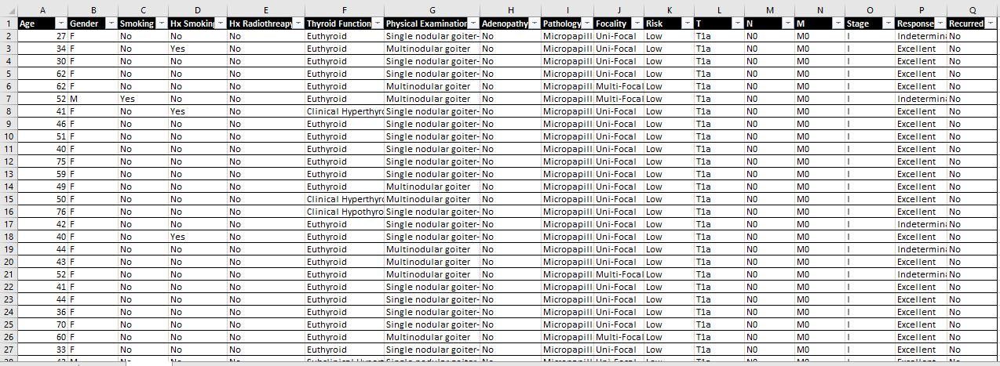
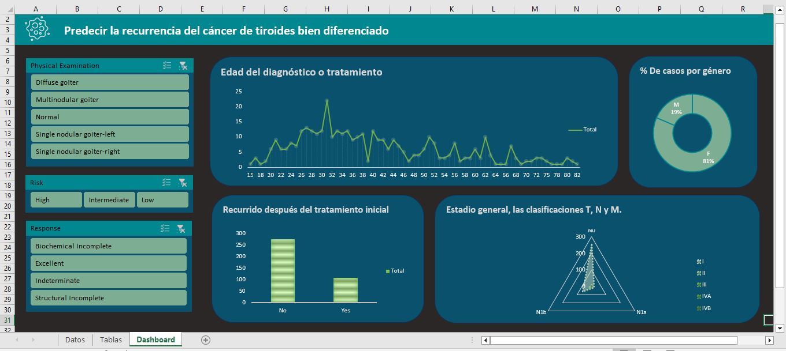

Este proyecto implica el análisis de una base de datos de cáncer de tiroides utilizando Excel. La base de datos contiene 383 registros y 17 columnas que abarcan 13 características clinicopatológicas clave. A través de este análisis, se buscan patrones y tendencias que puedan proporcionar información valiosa sobre la progresión y el tratamiento del cáncer de tiroides. Este proyecto destaca el poder de Excel para manejar y analizar grandes conjuntos de datos clínicos.lumnas.

• Edad: La edad del paciente en el momento del diagnóstico o tratamiento.
• Género: El género del paciente (masculino o femenino).
• Tabaquismo: Independientemente de si el paciente es fumador o no.
• Antecedentes de tabaquismo: Historial de tabaquismo del paciente (por ejemplo, si alguna vez ha fumado).
• Radioterapia Hx: Historial de tratamiento de radioterapia para cualquier condición.
• Función tiroidea: El estado de la función tiroidea, posiblemente indicando si hay alguna anomalía.
• Examen físico: Hallazgos de un examen físico del paciente, que puede incluir la palpación de la glándula tiroides y las estructuras circundantes.
• Adenopatía: Presencia o ausencia de ganglios linfáticos agrandados (adenopatía) en la región del cuello.
• Patología: Tipos específicos de cáncer de tiroides determinados mediante el examen patológico de muestras de biopsia.
• Focalidad: si el cáncer es unifocal (limitado a una ubicación) o multifocal (presente en múltiples ubicaciones).
• Riesgo: La categoría de riesgo del cáncer basada en diversos factores, como el tamaño del tumor, el grado de propagación y el tipo histológico.
• T: Clasificación del tumor según su tamaño y extensión de invasión a estructuras cercanas.
• N: Clasificación nodal que indica la afectación de los ganglios linfáticos.
• M: Clasificación de metástasis que indica la presencia o ausencia de metástasis a distancia.
• Estadio: El estadio general del cáncer, generalmente determinado mediante la combinación de las clasificaciones T, N y M.
• Respuesta: Respuesta al tratamiento, que indica si el cáncer respondió positivamente, negativamente o permaneció estable después del tratamiento.
• Recurrido: Indica si el cáncer ha recurrido después del tratamiento inicial.
